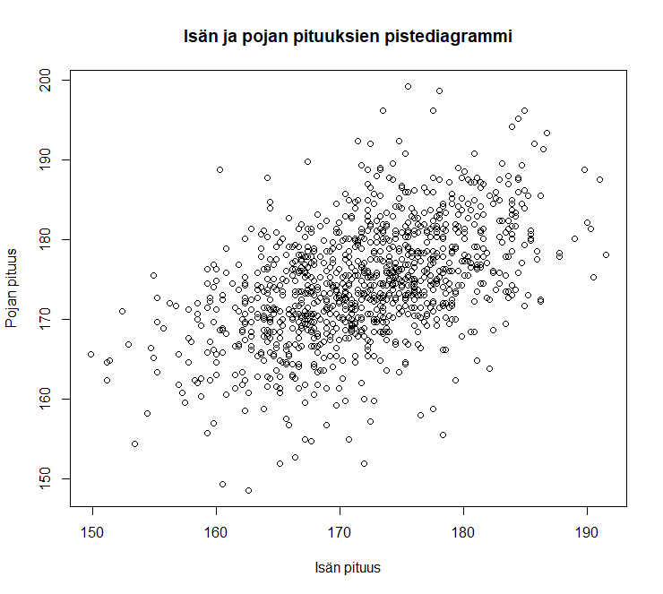
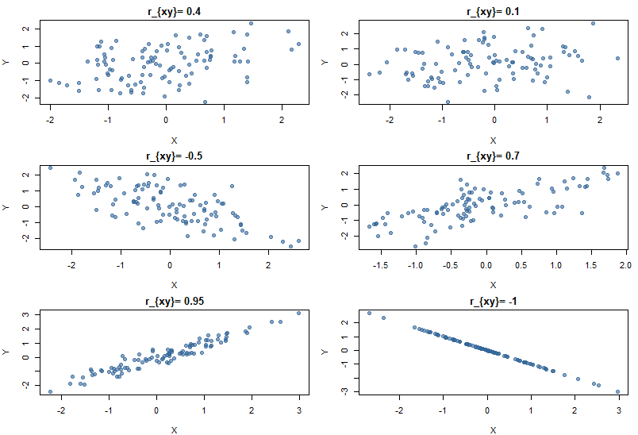
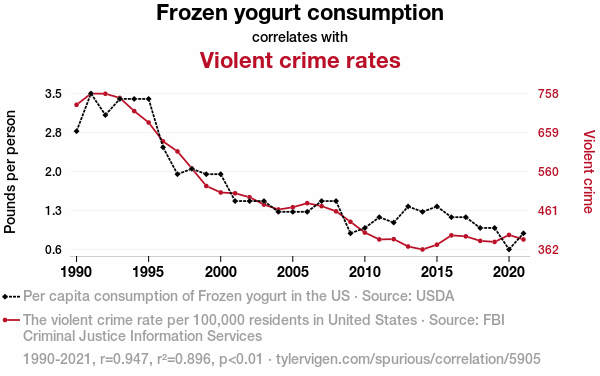

8 Tilastollinen riippuvuus, korrelaatio ja kausaalisuus
Tarkastelemme tässä luvussa tilastollisia tutkimusasetelmia, joissa on mukana kaksi tai useampia muuttujia. Pyrimme tässä luvussa vastaamaan (ainakin) seuraaviin kysymyksiin:
- Miten kahden (tai useamman) muuttujan samanaikainen tarkastelu vaikuttaa tilastolliseen analyysiin?
- Mitä tarkoitetaan kahden muuttujan tilastollisella riippuvuudella ja miten se eroaa eksaktista riippuvuudesta?
- Mitä tarkoitetaan korrelaatiolla?
- Mikä on korrelaation ja riippuvuuden suhde?
- Miten korrelaatiota ja sen voimakkuutta voidaan estimoida?
Käsittelemme myöhemmin Osassa II regressioanalyysia yhden selittäjän lineaarisen regressiomallin tapauksessa. Pitemmälle meneviä regressioanalyysin kysymyksiä käsitellään koko tilastotieteen opinto-ohjelman lävitse, kuten perusteellisesti lineaarisia ja yleistettyjä lineaarisia malleja koskevilla kursseilla.
8.1 Muuttujien välisistä riippuvuuksista
Tieteellisen tutkimuksen tärkeimmät ja mielenkiintoisimmat kysymykset liittyvät tavallisesti tutkimuksen kohteena olevaa ilmiötä kuvaavien muuttujien välisiin riippuvuuksiin.
Jos tilastollisen tutkimuksen kohteena olevaan ilmiöön liittyy useampia kuin yksi muuttuja, yhden muuttujan tilastolliset menetelmät antavat tavallisesti vain rajoittuneen kuvan ilmiöstä.
Sovellusten kannalta ehkä merkittävin osa tilastotiedettä käsittelee kahden tai useamman muuttujan välisten riippuvuuksien kuvaamista ja mallintamista.
Esimerkkejä riippuvuustarkasteluista:
Miten työttömyysaste Suomessa (% työvoimasta) riippuu BKT:n (bruttokansantuotteen) kasvuvauhdista Suomessa, Suomen viennin volyymista sekä BKT:n kasvuvauhdista muissa EU-maissa ja USA:ssa? Taloustieteilijät pyrkivät yleisesti löytämään muitakin lainalaisuuksia.
Millainen on riskin ja tuoton välinen suhde osakesijoittamisessa? Oletettavasti hajauttaminen pienentää riskiä ja/tai alhainen korkotaso suosii sijoittamista pörssiin.
Miten alkoholin kulutus (l per capita vuodessa) riippuu alkoholijuomien hintatasosta, ihmisten käytettävissä olevista tuloista ja alkoholin saatavuudesta?
Miten todennäköisyys sairastua keuhkosyöpään riippuu tupakoinnin määrästä ja kestosta?
Miten vehnän hehtaarisato (t/ha) riippuu kesän keskilämpötilasta ja sademäärästä sekä maan muokkauksesta, lannoituksesta ja tuholaisten torjunnasta?
Miten betonin lujuus (kg/cm2) riippuu sen kuivumisajasta?
Miten kemiallisen aineen saanto (%) riippuu valmistusprosessissa käytettävästä lämpötilasta?
Tilastollinen riippuvuus
Eksakti vs. tilastollinen riippuvuus. Tarkastelemme tässä esityksessä yksinkertaisuuden vuoksi pääasiassa kahden muuttujan välistä riippuvuutta:
Muuttujien välinen riippuvuus on eksaktia, jos toisen arvot voidaan mallintaa/ennustaa tarkasti (täydellisesti) toisen saamien arvojen perusteella.
Muuttujien välinen riippuvuus on tilastollista, jos niiden välillä ei ole eksaktia riippuvuutta, mutta toisen muuttujan arvoja voidaan käyttää apuna toisen muuttujan arvojen mallintamisessa ja mahdollisesti myös ennustamisessa.
Korrelaatio
Tilastollinen riippuvuus ja korrelaatio. Kahden muuttujan välistä (lineaarista) tilastollista riippuvuutta kutsutaan tilastotieteessä korrelaatioksi.
Korrelaation voimakkuutta mittaavia tilastollisia tunnuslukuja kutsutaan korrelaatiokertoimiksi.
Korrelaatiot muodostavat perustan muuttujien välisten riippuvuuksien ymmärtämiselle.
Vaikka korrelaatiot muodostavat perustan muuttujien välisten riippuvuuksien ymmärtämiselle, riippuvuuksia halutaan tavallisesti analysoida vielä paljon tarkemmin ja formaalimmin valittavan tilastollisen mallin kautta. Tämä tapahtuu perinteisesti mm. regressioanalyysiä hyödyntäen.
- Viime vuosina erityisesti koneoppimisen ja tilastollisen oppimisen myötä myös muita kehittyneitä vaihtoehtoja on käsitelty kiihtyvällä tahdilla.
Regressioanalyysi
Regressioanalyysi on tilastollinen menetelmä, jossa jonkin ns. selitettävän muuttujan tilastollista riippuvuutta joistakin toisista ns. selittävistä muuttujista pyritään mallintamaan regressiomalliksi kutsuttavalla tilastollisella mallilla.
- Käsittelemme regressioanalyysiä koskevaa johdantoa myöhemmin Osassa II.
8.2 Kahden muuttujan havaintoaineiston kuvaaminen
Kuten yhden muuttujan havaintoaineistojen tapauksessa, lähtökohdan kahden tai useamman muuttujan havaintoaineistojen kuvaamiselle muodostaa tutustuminen havaintoarvojen jakaumaan.
Havaintoarvojen jakaumaa kokonaisuutena voidaan kuvata sopivasti valituilla graafisilla esityksillä.
Havaintoarvojen jakauman karakteristisia ominaisuuksia voidaan kuvata sopivasti valituilla otostunnusluvuilla (ks. aiempi ja myös myöhemmät luvut koskien otostunnuslukuja ja otosjakaumia).
Koska useampiulotteisten kuvioiden kuin kaksiulotteisten muodostaminen ei ole usein kovin mielekästä, kolmen tai useamman muuttujan havaintoaineistoja havainnollistetaan tavallisesti niin, että muuttujia tarkastellaan pareittain.
Kahden järjestys-, välimatka- tai suhdeasteikoillisen muuttujan havaittujen arvojen pareja havainnollistetaan tavallisesti graafisella esityksellä, jota kutsutaan hajontakuvioksi tai pistediagrammiksi (“pistekaavio”, engl. scatter plot).
Ks. esimerkkikuva pistediagrammista allaolevasta isien ja poikien pituuksia koskevasta esimerkistä.
Pistediagrammi
Pistediagrammi (scatter plot). Olkoot (X) ja (Y) järjestys-, välimatka- tai suhdeasteikollisia satunnaismuuttujia, joiden \(n\) kappaletta havaittuja arvoja ovat (x_1, x_2, , x_n) ja (y_1, y_2, , y_n). Oletetaan lisäksi, että havaintoarvot (x_i) ja (y_i) liittyvät samaan havaintoyksikköön kaikille (i = 1, 2, , n) eli tarkastellaan pareja \((x_i, y_i), \, i=1,...,n\).
Havaintoarvojen parien (lukuparien) ((x_i, y_i)) pistediagrammi saadaan esittämällä lukuparit niiden määrittelemien pisteiden tasokoordinaatistossa.
Pistediagrammi sopii erityisesti kahden muuttujan välisen riippuvuuden havainnollistamiseen. Se on keskeinen työväline korrelaatio- ja regressioanalyysissa.
Esimerkki: Isän ja pojan pituus. Perinnöllisyystieteen mukaan lapset perivät geneettiset ominaisuutensa vanhemmiltaan. Periytyykö isän pituus heidän pojilleen?
Jo aiemmin tilastoaineiston esimerkkikohdassa viitattiin seuraavaan Karl Pearsonin klassikkoesimerkkiin 1078 havainnon aineistosta, joka sisältää isän ja heidän poikiensa pituuksia. Ts. aineisto koostuu lukuparista ((x_i , y_i),, i = 1, 2, , 1078), jossa (x_i) = isän (i) pituus ja (y_i) = isän (i) pojan pituus. Yksittäinen piste (kuvassa “ympyrä”) vastaa yhtä ko. lukuparien havaintoa. (Lähde: Kaggle: https://www.kaggle.com/datasets/abhilash04/fathersandsonheight.)
Yhtä pitkillä isillä näyttää olevan monen mittaisia poikia, mutta
lyhyillä isillä näyttää olevan keskimäärin lyhyempiä poikia kuin pitkillä isillä ja pitkillä isillä näyttää olevan keskimäärin pitempiä poikia kuin lyhyillä isillä.
Tällaisten tilastollisten riippuvuuksien analysoimista lineaaristen regressiomallien avulla tarkastellaan myöhemmin. Ts. miten pojan pituutta voidaan mallintaa isän pituutta hyödyntäen.
Usean muuttujan havaintoaineistojen karakteristisia ominaisuuksia voidaan kuvata muuttujakohtaisilla otostunnusluvuilla. Muuttujakohtaiset otostunnusluvut eivät kuitenkaan voi antaa informaatiota muuttujien välisistä riippuvuuksista. Muuttujien parittaisia tilastollisia riippuvuuksia voidaan (usein ja osin) kuvata sopivasti valitulla korrelaation mitalla, mitä tarkastellaankin seuraavaksi.
8.3 Satunnaismuuttujien kovarianssi ja korrelaatio
Tarkastellaan välimatka- tai suhdeasteikollisten satunnaismuuttujien (X) ja (Y) (Pearsonin tulomomentti-) korrelaatiokerrointa (_{XY}) ja sen estimointia.
Tällä kurssilla emme tarkastele tarkemmin mm. seuraavia tilastollisia testejä korrelaatiokertoimelle (_{XY}), kuten:
- Yhden otoksen testi korrelaatiokertoimelle
- Korrelaatiokertoimien vertailutestiä
- Korreloimattomuuden testaamista
Todetaan myös, että lisätietoja ja tarkempia yksityiskohtia moniulotteisista satunnaismuuttujista ja jakaumista tarkastellaan todennäköisyyslaskennan kursseilla.
Kovarianssi ja korrelaatio
Satunnaismuuttujien kovarianssi ja korrelaatio. Olkoon (\((X, Y)\)) satunnaismuuttujien (\(X\)) ja (\(Y\)) muodostama pari. Lisäksi \[\begin{equation*} \mu_X = \mathsf{E}(X) \qquad \mathrm{ja} \qquad \mu_Y = \mathsf{E}(Y) \end{equation*}\] ovat ko. satunnaismuuttujien (X) ja (Y) odotusarvot ja \[\begin{align*} \sigma^2_X &= \mathsf{Var}(X) = \text{D}^2(X) = \mathsf{E}[(X - \mu_X)^2] \\ \sigma^2_Y &= \mathsf{Var}(Y) = \text{D}^2(Y) = \mathsf{E}[(Y - \mu_Y)^2] \end{align*}\] satunnaismuuttujien (\(X\)) ja (\(Y\)) varianssit.
Määritellään satunnaismuuttujien (\(X\)) ja (\(Y\)) välinen kovarianssi (\(\sigma_{XY}\)) kaavalla \[\begin{equation*} \sigma_{XY} = \mathsf{Cov}(X,Y) = \mathsf{E}[(X-\mu_X)(Y-\mu_Y)]. \end{equation*}\] Sm:jien (\(X\)) ja (\(Y\)) korrelaatio (\(\rho_{XY}\)) on vastaavasti \[\begin{equation*} \rho_{XY} = \mathrm{Cor}(X,Y) = \frac{\sigma_{XY}}{\sigma_{X} \sigma_{Y}}, \end{equation*}\] jossa siis \(\sigma_X = \sqrt{\mathsf{Var}(X)} = \sqrt{\text{D}^2(X)}\) ja \(\sigma_Y = \sqrt{\mathsf{Var}(Y)} = \sqrt{\text{D}^2(Y)}\).
Satunnaismuuttujien (X) ja (Y) korrelaatiota \[\begin{equation*} \rho_{XY} = \mathrm{Cor}(X, Y) \end{equation*}\] kutsutaan ajoittain siis Pearsonin korrelaatiokertoimeksi (tulomomenttikorrelaatiokertoimeksi).
Pearsonin korrelaatiokerroin (\(\rho_{XY}\)) mittaa satunnaismuuttujien (\(X\)) ja (\(Y\)) lineaarisen riippuvuuden voimakkuutta. Ts. sm:jien välistä (lineaarista) yhteyttä.
Pearsonin korrelaatiokerrointa voidaan estimoida otoksen pohjalta Pearsonin otoskorrelaatiokertoimella.
Otoskorrelaatio
Pearsonin otoskorrelaatiokerroin. Havaintoarvojen pareista \((x_i, y_i), \, i=1,...,n,\) laskettu otoskovarianssi on \[\begin{equation*} s_{xy} = \frac{1}{n-1} \sum_{i=1}^{n} (x_i - \bar{x}) (y_i - \bar{y}), \end{equation*}\] jossa (\(\bar{x}\)) ja (\(\bar{y}\)) ovat havaintoarvojen (\(x\)) ja (\(y\)) aritmeettiset otoskeskiarvot.
Otoskovarianssin (\(s_{xy}\)) avulla voidaan määritellä (\(x\))- ja (\(y\))-havaintoarvojen lineaarisen tilastollisen riippuvuuden voimakkuuden mittari eli Pearsonin otoskorrelaatiokerroin (\(r_{xy}\)), mikä saadaan otoskovarianssista (\(s_{xy}\)) normeerausoperaatiolla, jossa otoskovarianssi (\(s_{xy}\)) jaetaan (\(x\))- ja (\(y\))-havaintoarvojen keskihajonnoilla (\(s_x\)) ja (\(s_y\)): \[\begin{equation*} r_{xy} = \frac{s_{xy}}{s_x s_y} = \frac{\sum_{i=1}^{n} (x_i - \bar{x}) (y_i - \bar{y})}{\sqrt{\sum_{i=1}^{n} (x_i - \bar{x})^2} \sqrt{\sum_{i=1}^{n} (y_i - \bar{y})^2}}. \end{equation*}\]
Todetaan tässä kohtaa vain lyhyesti, että otoskorrelaatiokertoimen estimaattori voidaan johtaa sekä momenttimenetelmällä että suurimman uskottavuuden menetelmällä, jotka ovat tyypillisiä estimointimenetelmiä tilastotieteessä ja tarkemmin tilastollisessa päättelyssä.
Otoskovarianssin ominaisuuksia:
Huomaa, että (\(x\))- ja (\(y\))-havaintoarvojen otoskovarianssit niiden itsensä kanssa ovat niiden variansseja.
Otoskovarianssi (\(s_{xy}\)) mittaa (\(x\))- ja (\(y\))-havaintoarvojen yhteisvaihtelua niiden aritmeettisten keskiarvojen ympärillä.
Otoskovarianssilla on taipumus saada positiivisia (negatiivisia) arvoja, jos havaintopisteiden muodostama “pistepilvi” (“pisteparvi)” näyttää nousevalta (laskevalta) oikealle mentäessä; ks. pistediagrammin ilmeen ja Pearsonin otoskorrelaatiokertoimen yhteys, jota käsitellään seuraavaksi.
Pearsonin otoskorrelaatiokertoimella (\(r_{xy}\)) on seuraavat ominaisuudet:
- (\(-1 \le r\_{xy} \le 1\))
- (\(r_{xy} = \pm 1\)), jos ja vain jos (\(y_i = \alpha + \beta x_i\)), jossa (\(\alpha\)) ja (\(\beta\)) ovat reaalisia vakiota ja (\(\alpha,\beta \neq 0\)).
- Korrelaatiokertoimella (\(r_{xy}\)) ja kovarianssilla (\(s_{xy}\)) on aina sama etumerkki
Näiden ominaisuuksien (i)-(iii) perusteella voidaan tehdä seuraavia huomioita ja tulkintoja:
- Havaintoarvojen pareista (\((x_i, y_i), i = 1,2, \ldots, n,\)) laskettu Pearsonin otoskorrelaatiokerroin (\(r_{xy}\)) mittaa (\(x\))- ja (\(y\))-havaintoarvojen lineaarisen tilastollisen riippuvuuden voimakkuutta.
- Jos (\(r_{xy} = \pm 1\)), niin (\(x\))- ja (\(y\))-havaintoarvojen välillä on eksakti eli funktionaalinen lineaarinen riippuvuus, mikä merkitsee sitä, että kaikki havaintopisteet (\((x_i, y_i)\)) asettuvat samalle suoralle.
- Jos (\(r_{xy} = 0\)), niin (\(x\))- ja (\(y\))-havaintoarvojen välillä ei voi olla eksaktia lineaarista riippuvuutta.
- Karkeasti ajatellen voidaan todeta, että jos \(|r_{xy}|>0.8\), niin korrelaatio on voimakasta, välillä 0.6-0.8 huomattavaa, ja tätä ennen kohtalaista tai lähes merkityksetöntä kun \(r_{xy} \approx 0\).
- Vaikka (\(r_{xy} = 0\)), (\(x\))- ja (\(y\))-havaintoarvojen välillä saattaa silti olla jopa eksakti epälineaarinen riippuvuus.
Esimerkki: Alapuolella esitettävät (simuloidut) kuviot havainnollistavat kahden muuttujan havaittujen arvojen (\((n = 100)\)) pistediagrammin ilmeen ja korrelaation välistä yhteyttä.

Ks. seuraavasta linkistä lisää havainnollistuksia: Guess the correlation pelissä pääset arvioimaan esitettävän pisteparven korrelaation voimakkuutta erilaisissa simuloiduissa tilanteissa: http://guessthecorrelation.com/
Kausaalisuuden ehdot
Kausaalisuus. Muuttujan (\(x\)) arvojen muutos vaikuttaa muuttujan (\(y\)) arvoihin (syy-vaikutussuhde), jos seuraavat kolme aika yleiselle tasolle tuotua ehtoa täyttyvät:
- Muuttujan (\(x\)) muutos esiintyy ajallisesti ennen (\(y\)):n muutosta.
- Muuttujissa (\(x\)) ja (\(y\)) tapahtuvien muutosten välillä on tilastollista riippuvuutta (korrelaatiota tai muuta riippuvuutta).
- Ei sekoittumista. Muuttujassa (\(y\)) tapahtunutta muutosta ei voida selittää millään muilla tekijöillä.
Kausaalisuhteita on vaikea todentaa tilastollisesti, mutta hyvin suunnitellut satunnaistetut kokeet ovat usemmiten paras käytettävissä oleva viitekehys tämänkaltaisen tutkimusasetelman saavuttamiseksi, mikäli se on ylipäätään ko. sovelluksen kohdalla mahdollista.
- Satunnaistetut kokeet vähentävät harhan ja sekoittavien tekijöiden vaikutusta, mikä tekee niistä luotettavimman tavan osoittaa kausaalisuhteita.
Käytännössä kausaalisuhteita selvitettäessä on tunnettava etukäteen ilmiötä koskevat aiemmat teoriat ja tutkimukset tarkasti, jotta voidaan ottaa huomioon ilmiöön vaikuttavat tekijät.
- Todellisuus (ja mahdollinen kausaalisuussuhde) on usein monimutkaisempi, kuin mitä tällainen yksinkertainen (kahden muuttujan välinen) analyysi kykenee kuvaamaan:
Voidaan siis todeta, että kahden muuttujan yhteisvaihtelu ei riitä todisteeksi siitä, että kyseessä olevien muuttujien välillä on kausaalista yhteyttä.
Tilastollisia menetelmiä, kuten regressioanalyysiä ja siinä yhteydessä erilaisten selittävien muuttujien myötä tapahtuvaa niiden vaikutuksen kontrollointia voidaan käyttää ko. tekijöiden huomioon ottamiseksi, mutta aina tarvitaan harkintaa sen suhteen, kuinka luottavaisesti kausaalisuudesta voidaan väittää jotain. Tämä johtuu (osaltaan) siitä, että tilastolliset mallit perustuvat oletuksiin, jotka eivät aina pidä paikkaansa todellisessa maailmassa.
Esimerkki. Alla olevassa kuvassa on esimerkki todella vahvasta yhteisvaihtelusta jäädykejogurtin (eng. frozen yogurt) kulutuksen ja väkivaltarikosten välillä Yhdysvalloissa. Kyseisten havaintojen korrelaatioksi vuosien 1990-2021 välillä saadaan (\(r_{xy} = 0.947\)), joka on erittäin suurta, kun huomioidaan että kyseiset muuttujat eivät tunnu liittyvän toisiinsa mitenkään.
Kyseessä onkin nk. “näennäinen korrelaatio”, eli tilanne, jossa kaksi muuttujaa korreloi vahvasti vailla mitään syytä. Näin voi tapahtua täysin sattumalta! Voit etsiä lisää esimerkkejä Tyler Vigenin tarjoamalta Spurious Correlations -verkkosivulta!

Yhteisvaihtelu voi johtua myös kolmannen muuttujan vaikutuksesta molempiin muuttujiin tai virheellisestä otannasta, vaikka muuttujat olisivatkin perusjoukossa toisistaan riippumattomia.
- Klassinen esimerkki tällaisesta “puuttuvan muuttujan harhasta” on hukkumiskuolemien ja jäätelön kulutuksen näennäinen yhteys, jos tarkastellaan vain niiden välistä korrelaatiota.
- Tosiasiassa molempia selittää lämpimät kelit, jolloin ihmiset uivat enemmän, mutta myös syövät enemmän jäätelöä!
Esimerkki: Simpsonin paradoksi: U.C. Berkeleyn sukupuolisyrjintä. Simpsonin paradoksilla tarkoitetaan tilannetta, jossa kahden muuttujan välinen korrelaatio muuttuu päinvastaiseksi otettaessa huomioon jokin kolmas muuttuja, joka korreloi molempien muuttujien kanssa.
Yksi tunnetuimmista esimerkeistä Simpsonin paradoksista on Berkeleyn yliopiston sukupuolisyrjintätapaus.
- Yliopisto haastettiin oikeuteen vuonna 1973 sukupuolisyrjinnästä.
- Väitettiin, että yliopistoon olisi miesten helpompi päästä kuin naisten, sillä yhteensä 8442:sta mieshakijasta 44 % hyväksyttiin kun samat luvut olivat naisilla 4321 ja 35 %.
- Mieshakijoista pääsi siis 9 prosenttiyksikköä enemmän sisälle kuin naisista.
Tarkasteltaessa erikseen eri tiedekuntia huomattiin, että itse asiassa useammassa tiedekunnassa naisia on päässyt sisälle isompi osuus hakijoista.
- Tämä johtui siitä, että naiset hakivat opiskelemaan aloja, joille sisäänpääsystä käytiin kovempaa kilpailua. Toisin sanoen, naisten hakemukset keskittyivät aloille, joilla oli vähemmän aloituspaikkoja.
- Aineisto kuudesta isoimmasta tiedekunnasta on listattu alla olevaan taulukkoon.
| Tiedekunta | Hakijat (Miehet) | Hyväksytyt % (Miehet) | Hakijat (Naiset) | Hyväksytyt % (Naiset) |
|------------|------------------|-----------------------|------------------|-----------------------|
| A | 825 | 62 | 108 | 82 |
| B | 560 | 63 | 25 | 68 |
| C | 325 | 37 | 593 | 34 |
| D | 417 | 33 | 375 | 35 |
| E | 191 | 28 | 393 | 24 |
| F | 373 | 6 | 341 | 7 |Vielä siis tiivistäen korrelaatiokertoimeen liittyviä tulkintavirheitä aiheuttavat useimmiten seuraavat seikat:
- Riippuvuudesta ei välttämättä seuraa syy-seuraussuhdetta.
- Kolmas muuttuja eli kahden muuttujan välinen yhteys selittyy yhteisestä syystä (esimerkiksi lämpimästä kesästä).
- Muuttujien välinen yhteys ei ole lineaarinen (on epälineaarinen).
- Poikkeavien havaintojen vaikutus.
Puutteita: Korrelaatiokertoimella on kaksi puutetta:
- Se mittaa vain lineaarista riippuvuutta.
- Se ei ole (tilastollinen) malli, jonka avulla nähtäisiin, miten toinen muuttuja vaikuttaa toiseen muuttujaan.
::::::::